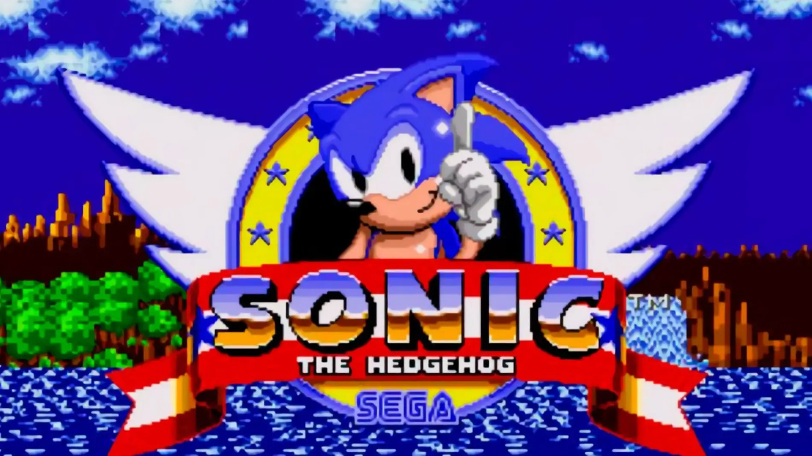

🦔 Sonic the Hedgehog

Género: Plataformas / Acción
Desarrolladora: Sonic Team (Sega)
Creadores: Naoto Ōshima (diseño del personaje), Yuji Naka (programación), Hirokazu Yasuhara (diseño de niveles)
Lanzamiento del primer juego: 23 de junio de 1991 (Sega Genesis/Mega Drive)
Plataformas: Sega Genesis, Dreamcast, GameCube, PlayStation 2, Xbox, Nintendo Switch, PC y múltiples consolas
Ventas totales de la serie: Más de 1,660 millones de copias y descargas gratuitas (hasta 2024)
Recaudación total: Más de $6,450 millones de dólares
📖 Sinopsis general
Sonic the Hedgehog es la franquicia insignia de Sega y una de las sagas de videojuegos más importantes de la historia. El protagonista es Sonic, un erizo azul antropomórfico con la habilidad de correr a la velocidad del sonido. Su misión principal es detener los planes del malvado Doctor Eggman (también conocido como Dr. Ivo Robotnik), un científico loco que quiere conquistar el mundo transformando a los animales en robots y apoderándose de las Chaos Emeralds.
La jugabilidad se caracteriza por ser extremadamente rápida: el jugador recorre niveles llenos de loops, rampas, muelles y obstáculos, recolectando anillos que funcionan como sistema de salud. Al perder todos los anillos, Sonic muere y se pierde una vida.
🎮 Historia y creación
A finales de los años 80, Nintendo dominaba la industria de los videojuegos con su mascota Mario. Sega necesitaba una mascota que pudiera competir y mostrar el poder de su consola de 16 bits, la Sega Genesis (Mega Drive). La empresa japonesa celebró un concurso interno para diseñar un nuevo personaje insignia.
El programador Yuji Naka desarrolló un algoritmo que permitía que un personaje se moviera suavemente a alta velocidad, y el artista Naoto Ōshima diseñó a Sonic basándose en varios conceptos: inicialmente el personaje iba a ser un conejo, luego un armadillo, y finalmente un erizo. El color azul se eligió para que coincidiera con el logotipo de Sega, y sus zapatos rojos y blancos se inspiraron en la portada del álbum "Bad" de Michael Jackson.
El primer juego, Sonic the Hedgehog (1991), fue un éxito rotundo. Ayudó a Sega a capturar el 65% del mercado de consolas en América del Norte durante la era de 16 bits, convirtiéndose en el principal rival de Nintendo.
🏆 Juegos principales y evolución
- ★ Sonic the Hedgehog (1991): El juego que empezó todo. Vendió 15 millones de copias y estableció los niveles icónicos como Green Hill Zone.
- ★ Sonic the Hedgehog 2 (1992): Introdujo a Tails, el zorro de dos colas, y la transformación Super Sonic. Vendió 6 millones de copias.
- ★ Sonic CD (1993): Introdujo a Amy Rose y Metal Sonic. Famoso por su viaje en el tiempo y su increíble banda sonora.
- ★ Sonic 3 & Knuckles (1994): Introdujo a Knuckles the Echidna. Vendió 4 millones de copias. Originalmente planeado como un solo juego, se dividió en dos por limitaciones de tiempo.
- ★ Sonic Adventure (1998): El primer gran juego de Sonic en 3D, lanzado para Dreamcast. Vendió 2.5 millones de copias.
- ★ Sonic Adventure 2 (2001): Introdujo a Shadow the Hedgehog y popularizó la canción "Live and Learn". Vendió más de 1.7 millones de copias.
- ★ Sonic Generations (2011): Celebración del 20 aniversario mezclando Sonic clásico (2D) y moderno (3D).
- ★ Sonic Mania (2017): Un regreso a las raíces 2D, aclamado por la crítica con 86/100 en Metacritic. Vendió 1 millón de copias.
- ★ Sonic Frontiers (2022): El primer mundo abierto de la serie, con gran éxito comercial.
👥 Personajes principales
- Sonic the Hedgehog: El protagonista. Un erizo azul de 15 años que puede correr a la velocidad del sonido. Su actitud despreocupada y su amor por la aventura lo definen. Puede transformarse en Super Sonic con las 7 Chaos Emeralds.
- Miles "Tails" Prower: Un zorro amarillo de 8 años con dos colas que le permiten volar. Es el mejor amigo y compañero de Sonic. Extremadamente inteligente y hábil con la mecánica.
- Knuckles the Echidna: Un equidna rojo de 16 años, guardián de la Master Emerald en Angel Island. Es fuerte, puede planear y escalar paredes. Aunque inicialmente fue engañado por Eggman para que peleara contra Sonic, luego se convirtió en su aliado.
- Amy Rose: Una eriza rosa de 12 años que se autoproclama novia de Sonic. Usa un martillo gigante (Piko Piko Hammer) para defenderse.
- Shadow the Hedgehog: Un erizo negro con rayas rojas, conocido como "La Forma de Vida Definitiva". Creado por el abuelo de Eggman, el Profesor Gerald Robotnik. Es un anti-héroe con habilidades similares a Sonic, incluyendo Chaos Control (manipulación del tiempo y el espacio).
- Doctor Eggman (Dr. Ivo Robotnik): El principal antagonista. Un científico loco con un coeficiente intelectual de 300 que constantemente intenta conquistar el mundo construyendo robots y naves de guerra.
- Metal Sonic: El robot malvado creado por Eggman a imagen y semejanza de Sonic. Es uno de los rivales más icónicos del erizo azul.
🎬 Adaptaciones y cultura popular
Sonic ha trascendido los videojuegos convirtiéndose en un ícono global de la cultura pop. Ha protagonizado múltiples series animadas como Sonic X (2003-2005), Sonic Boom (2014-2017) y Sonic Prime (2022-2024).
En 2020, Paramount Pictures estrenó la primera película live-action de Sonic, que recaudó más de $300 millones mundialmente a pesar de la controversia inicial por el diseño del personaje (que tuvo que ser rediseñado después de que los fans lo criticaran). La película tuvo secuelas en 2022 y 2024, siendo esta última un éxito aún mayor.
Además, Sonic ha aparecido en cómics publicados por Archie Comics (1993-2017) e IDW Publishing (2018-presente), manteniendo viva la historia del erizo más allá de los juegos.
⭐ Puntuación y legado
Sonic es considerado uno de los personajes más influyentes en la historia de los videojuegos. La saga ha tenido altibajos críticos (con juegos aclamados como Sonic Mania con 86/100 y otros criticados como Sonic the Hedgehog 2006 con 46/100), pero su impacto cultural es innegable.
Puntuación general de la serie: ⭐⭐⭐⭐ (4/5 - Una franquicia icónica con momentos brillantes)
← Volver a la lista de juegos